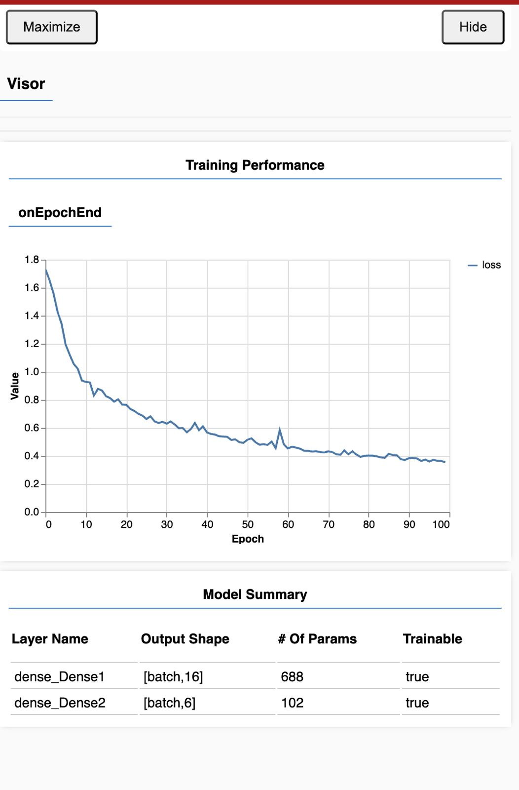

Our A2 explores how machine learning can recognize five classical mudras using hand gesture detection, and play a specific song for each one.
::::
:::
Process
We started by collecting images for each mudra. Honestly, it wasn’t easy, some people struggled to hold the poses correctly. Their fingers wouldn’t bend the right way, and we had to guide them through the gestures.
While researching how to train a model using images, we first came across TensorFlow. Then we found ml5.js was built on top of it. Arvind told us TensorFlow might be too complicated for us right now, so we went ahead with ml5.js. We also briefly tested FeatureExtractor using MobileNet, a pre-trained convolutional neural network. While that worked well for basic image classification, it wasn’t ideal for our keypoint-based approach.
Our process became more structured after we broke it down step by step:
1 Click and label all mudra images using our naming format.
2 Use Python to generate a CSV of file paths and mudra labels.
3 Use a JavaScript sketch to extract 21 keypoints using handpose.
4 Save those as a second CSV with 42 values (x, y for each keypoint).
5 Train the model using ml5’s NeuralNetwork class.
6 Trigger specific audio clips based on predictions.
We were thrilled when handpose detection worked on a single image. Seeing 21 points plotted and successfully exported to a CSV felt like a major win. The real challenge came when we tried to extract keypoints from multiple images. Initially, only the first image would return valid landmark data or in some runs, just the header row appeared in the output CSV. After some debugging, we realized the handpose model was being called before it had fully loaded. We had placed the loop logic inside preload(), which runs before asynchronous models like ml5.handpose() are ready. Once we moved the loop and prediction logic into setup() and ensured it only ran after the model had finished loading, all images were processed correctly.
We also ran into silent failures because we were using an older version of ml5.js. Updating to v0.6.0 solved most of these issues. All of this was done using just our own dataset—and by the end of it, we had a clean, functioning CSV and a working model that could accurately detect our mudras. It gave us a solid foundation before moving on to combining data from other teams.
Merging datasets from other teams introduced a few complications:
–Label inconsistencies like “Arala” vs “arala”, or “kataka-mukha” vs “katakamukha”.
–Range mismatches: One team’s landmark coordinates ranged between 500–1000, while ours were around 160–300. We cleaned the labels for consistency by writing py scripts and weren’t really sure if the range mismatch would pose a huge problem, we found that normalising in our final code would help solve that problem so that’s exactly what we did.
During training, we used a neural network architecture with two dense (fully connected) layers. The first hidden layer contains 16 neurons, and the final output layer contains 6 neurons, one for each mudra class. This reduction from 16 to 6 happens because the first layer transforms the 42 landmark inputs into 16 abstract features, and the second layer uses those features to predict the probabilities of the 6 possible mudras.The first layer learns patterns, and the second layer classifies them. The training ran for 100 epochs using ml5.js’s built-in training system. As shown in the training performance/loss graph, the loss started high (around 1.7) and steadily decreased throughout training, eventually plateauing around 0.35–0.40. This trend indicated that the model was successfully learning from the dataset without overfitting. There are some fluctuations in the mid-epochs (around epoch 55), which could be due to variations in gesture quality or class imbalance, but overall the model stabilised well. We were also unsure whether we needed to manually set a batch size along with the number of epochs. After some research, we found that ml5.js handles batching internally by passing control to TensorFlow.js, which sets a default batch size of 32 if none is provided. Since our dataset wasn’t very large, we decided to leave it at the default, and training worked smoothly.

While testing the system, we realised that the model was always giving a prediction, even when the hand wasn’t clearly showing a mudra. This sometimes led to incorrect or low-confidence outputs being treated as valid. To make the system feel more trustworthy, we decided to display the confidence score on screen. This way, users could see how sure the model was about each prediction, even if it wasn’t perfect. We considered adding a confidence threshold that would prevent any feedback below a certain score, but we realised that would make the system feel less responsive. Instead, we chose to keep sound playback separate from confidence filtering. So even if confidence is low, the sound still plays but the user can see that the system is unsure. It was more about transparency than restriction.
At first, the sound logic itself had issues. Different tracks would play over each other or cut off suddenly when the predictions changed rapidly. We solved this by stopping all currently playing sounds before triggering a new one, and by making sure that a sound only plays when the predicted mudra actually changes.
Finally, we noticed the model was sometimes predicting a mudra even when there was no hand in the frame at all. To deal with that, we added a quick check so that classification only runs if a hand is actually detected using handpose. No hand, no prediction, no sound. It made the system feel way more grounded and less random.
References
Getting started with ml5js with Erik Katerborg
Image Classification with ml5.js with Dan Shiffman Katerborg